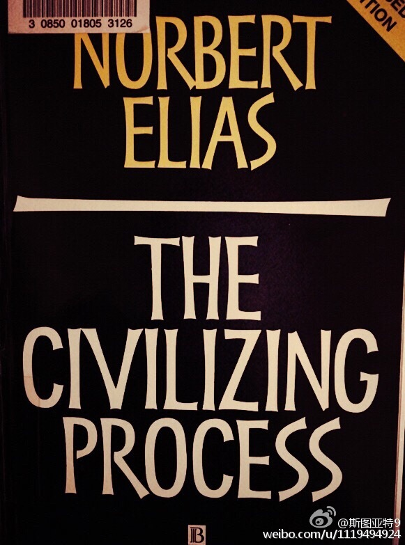

有一件事我一直搞错了：我一直以为犹太复国主义是一帮很宗教化崇尚犹太教的人，这帮人甚至要让犹太人日常也说希伯来圣经使用的希伯来语！但这是南辕北辙的理解，希伯来语复兴恰恰是个世俗化运动，希望用语言来做犹太人民族认同标志，取代犹太教。犹太复国运动是这些世俗化的犹太人领导的民族主义运动。
装逼太失败了。这书内容有点晦涩难懂，还是法文翻译的英文。尽管一页一页往后翻还是有点翻不下去。名著真不是好看的啊。尤其第二卷，实在是……@斯图亚特9:大学时候上 @清华孙立平 老师的《社会学》的课，课上反复提起这本书。十多年后我真的把它借来了。不知道有没有时间看…… 
最近微博上好多人转发骂张绍刚讽刺那个说出“引力波”的民科的，一波接一波，不乏一些社会名流，还有 @阿忆 这样以知识渊博著名的的北大教师。我真是搞不懂这世界是怎么了。前几天证实引力波的新闻这些人都看了没有啊。把两者的附会在一起，你们真是认真的啊？